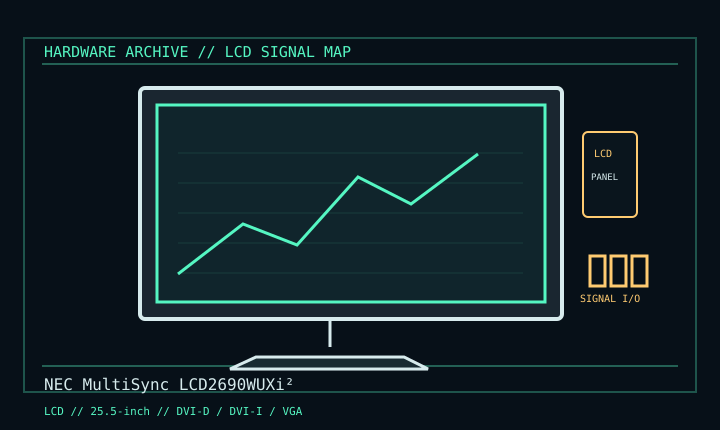

[ INDIVIDUAL COMPONENT // DISPLAYS ]
NEC MultiSync LCD2690WUXi²
25.5-inch wide-gamut H-IPS LCD, late 2000s. LCD

IDENTIFICATION: Verify the complete model/revision on the rear label. Specifications are tied to the cited manual/specification; variant-dependent values are qualified rather than generalized.
Specifications
| Catalog subcategory | Lcd Displays |
|---|---|
| Exact product/family | NEC MultiSync LCD2690WUXi² |
| Era | 25.5-inch wide-gamut H-IPS LCD, late 2000s. |
| Panel / image | 25.5-inch viewable H-IPS; 1920 × 1200, 16:10; 320 cd/m² and 1000:1 typical. |
| Inputs / refresh | DVI-D, DVI-I and VGA; native resolution 60 Hz. |
| Power / mechanical | 115 W typical, under 2 W power-save; height-adjustable pivot stand and USB hub. |
| Color | Wide-gamut/color-critical model; hardware calibration depends on supported software/probe workflow. |
Revision, signal & host compatibility
“WUXi²” suffix matters: don’t substitute the LCD2690WUXi or WUXi2 specification/accessory list without checking label. Calibration feature requires its supported workflow; an input connection alone does not guarantee color accuracy.
Match source signal type, sync/timing, connector pinout, bandwidth and power path to this exact display. Physical connector fit alone does not establish electrical or timing compatibility.
Preservation & repair notes
Save LUT/software/calibration state before reset; check uniformity, color drift and aging backlight. Preserve hood, stand and calibration report. Avoid LCD pressure and follow NEC service documentation.
Record model suffix, serial/date label, accessories, image condition, configuration, source document and repair history. CRT high-voltage, LCD backlight and OLED panel risks require appropriate service training and the correct manual.
Manufacturer manuals & references
- NEC MultiSync LCD2690WUXi² User ManualModel manual/specification with supported modes and care.
- NEC LCD2690WUXi manual mirrorOperating reference for this product family.